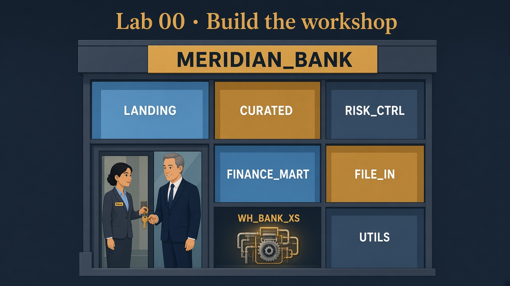

1
Open Snowsight as ACCOUNTADMIN
Why ACCOUNTADMIN for five minutes?
Only the “mayor” can create warehouses/databases and stamp Elena’s role with CREATE ROLE power.
Day-to-day Elena will wear ROLE_BANK_LAB_ADMIN, not ACCOUNTADMIN.
Lab 00 · Monday morning · You are Elena
Read the bank story if you haven’t. Pattern every lab: Problem → Solution (SQL) → Elena’s wrap-up.
MERIDIAN_BANK, warehouse WH_BANK_XS, architect role
ROLE_BANK_LAB_ADMIN, schemas for landing/curated/risk/marts, and 5 sample LANDING.CLIENTS.

| Schema | Bank meaning |
|---|---|
LANDING | Loading dock — raw client/txn files land here |
CURATED | Clean shelves — safe for broader read |
RISK_CTRL | Policy office — masking / entitlements |
FINANCE_MART | Report wall for Finance / Alex |
FILE_IN | Truck bay for file stages |
UTILS | Toolbox |
Snowflake also shows PUBLIC + INFORMATION_SCHEMA — ignore those; they’re automatic.
Only the “mayor” can create warehouses/databases and stamp Elena’s role with CREATE ROLE power.
Day-to-day Elena will wear ROLE_BANK_LAB_ADMIN, not ACCOUNTADMIN.
| Part | Meaning |
|---|---|
Create WH_BANK_XS | Tiny engine; auto-sleeps to save money |
Create ROLE_BANK_LAB_ADMIN | Elena’s lab badge |
| Account grants | Create roles, apply policies, run tasks, create shares (later labs) |
Create MERIDIAN_BANK | The bank’s database building |
| Ownership → lab admin | Elena owns the objects she builds |
| Smoke create+drop role | Proves CREATE ROLE works before Lab 01 |
USE ROLE ACCOUNTADMIN;
CREATE WAREHOUSE IF NOT EXISTS WH_BANK_XS
WAREHOUSE_SIZE = 'XSMALL'
AUTO_SUSPEND = 60
AUTO_RESUME = TRUE
INITIALLY_SUSPENDED = TRUE
COMMENT = 'Meridian Bank lab warehouse';
CREATE ROLE IF NOT EXISTS ROLE_BANK_LAB_ADMIN
COMMENT = 'Lab architect role — owns Meridian Bank lab objects';
GRANT CREATE ROLE ON ACCOUNT TO ROLE ROLE_BANK_LAB_ADMIN;
GRANT APPLY MASKING POLICY ON ACCOUNT TO ROLE ROLE_BANK_LAB_ADMIN;
GRANT APPLY ROW ACCESS POLICY ON ACCOUNT TO ROLE ROLE_BANK_LAB_ADMIN;
GRANT EXECUTE TASK ON ACCOUNT TO ROLE ROLE_BANK_LAB_ADMIN;
GRANT CREATE SHARE ON ACCOUNT TO ROLE ROLE_BANK_LAB_ADMIN;
GRANT USAGE ON WAREHOUSE WH_BANK_XS TO ROLE ROLE_BANK_LAB_ADMIN WITH GRANT OPTION;
GRANT OPERATE ON WAREHOUSE WH_BANK_XS TO ROLE ROLE_BANK_LAB_ADMIN WITH GRANT OPTION;
CREATE DATABASE IF NOT EXISTS MERIDIAN_BANK
COMMENT = 'Meridian Bank — interview prep';
GRANT OWNERSHIP ON DATABASE MERIDIAN_BANK TO ROLE ROLE_BANK_LAB_ADMIN COPY CURRENT GRANTS;
SET uname = (SELECT CURRENT_USER());
GRANT ROLE ROLE_BANK_LAB_ADMIN TO USER IDENTIFIER($uname);
USE ROLE ROLE_BANK_LAB_ADMIN;
CREATE ROLE IF NOT EXISTS ROLE_BANK_SMOKE_TMP COMMENT = 'temp smoke test';
DROP ROLE IF EXISTS ROLE_BANK_SMOKE_TMP;
USE WAREHOUSE WH_BANK_XS;
USE DATABASE MERIDIAN_BANK;
CREATE SCHEMA IF NOT EXISTS LANDING;
CREATE SCHEMA IF NOT EXISTS CURATED;
CREATE SCHEMA IF NOT EXISTS RISK_CTRL;
CREATE SCHEMA IF NOT EXISTS FINANCE_MART;
CREATE SCHEMA IF NOT EXISTS FILE_IN;
CREATE SCHEMA IF NOT EXISTS UTILS;
SELECT 'Lab 00 Meridian Bank bootstrap OK' AS status;
SHOW SCHEMAS IN DATABASE MERIDIAN_BANK;Lab 01’s whole drama needs real-looking PII so Elena can prove Alex cannot see it.
USE ROLE ROLE_BANK_LAB_ADMIN;
USE WAREHOUSE WH_BANK_XS;
USE DATABASE MERIDIAN_BANK;
USE SCHEMA LANDING;
CREATE OR REPLACE TABLE CLIENTS (
CLIENT_ID NUMBER,
FULL_NAME STRING,
EMAIL STRING,
PHONE STRING,
COUNTRY STRING,
SSN_LAST4 STRING,
CREATED_AT TIMESTAMP_NTZ DEFAULT CURRENT_TIMESTAMP()
);
INSERT INTO CLIENTS (CLIENT_ID, FULL_NAME, EMAIL, PHONE, COUNTRY, SSN_LAST4) VALUES
(1, 'Asha Patel', 'asha.patel@example.com', '+1-555-0101', 'US', '1234'),
(2, 'Ben Okonkwo', 'ben.okonkwo@example.com', '+1-555-0102', 'US', '5678'),
(3, 'Chen Wei', 'chen.wei@example.com', '+1-555-0103', 'CA', '9012'),
(4, 'Diana Rossi', 'diana.rossi@example.com', '+1-555-0104', 'US', '3456'),
(5, 'Evan Ng', 'evan.ng@example.com', '+1-555-0105', 'UK', '7890');
SELECT * FROM CLIENTS ORDER BY CLIENT_ID;USE SECONDARY ROLES NONE — see Gotchas.